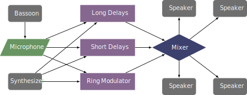

This piece was written in 1986 and is published by Deutscher Verlag für Musik. It is also one of the early interactive works for the bassoon and is seven parts long. It is currently obsolete.
The original piece would be difficult to perform due to the necessary analog hardware. Andre Bartetzki created a version in SuperCollider for a performance, but that patch is already out of date and would have to be rewritten depending on the MIDI controller being used. The piece features four speakers, two in front and two in back. The sound is processed through a ring modulator, a series of short delays that proceed in a circle around the audience, and a long delay that also moves in a circle. The bassoon, synthesizer, and a sequencer are all routed to each of these effects.
A reconstruction may look something like below, but would require some programming to create the electronics. 
This piece is very difficult technically. The range is extreme, and features multiphonics, quarter tones, wide dissonant leaps, extreme dynamics, and very fast rhythms. It is certainly beyond the reach of undergraduate students. With a working patch, the electronics would likely not be too difficult, as the changes tend to last for several measures.
This piece fits into the avant-garde style, featuring multiphonics, flutter-tonguing, air sounds, and atonal harmonies. It would be a difficult piece for audiences unaccustomed to this style of music.
©2025 by Benjamin Bradshaw
Logo ©2025 by Hannah Bradshaw